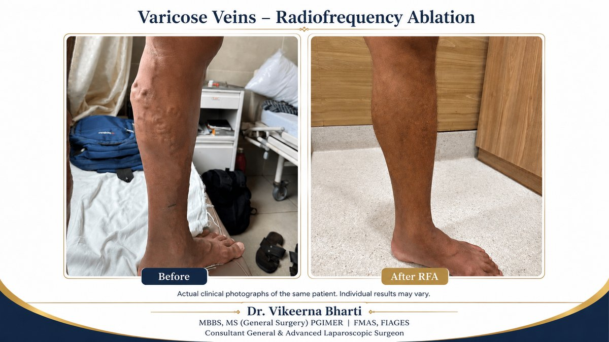
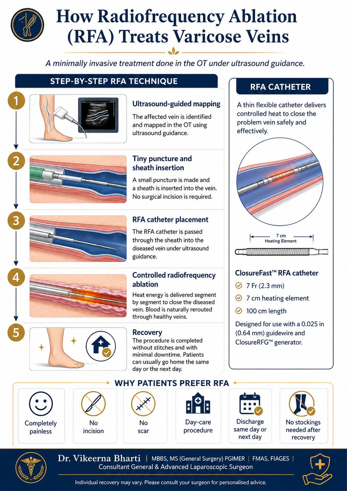

Virtually painless Radiofrequency Ablation (RFA) for varicose veins at Samford Hospital, Kokar Chowk, Ranchi. Performed in the operation theatre under ultrasound guidance — no incision, no scar, with same-day or next-day discharge in selected patients. Dr. Vikeerna Bharti, MS Surgery, PGIMER.

Varicose veins (in Hindi: पैरों की फूली, नीली और मुड़ी हुई नसें) are enlarged, twisted, rope-like veins that appear just under the skin of the legs — usually dark blue or purple. They are one of the most common vein problems and affect roughly 20–30% of adults, more so in people who stand for long hours (teachers, shopkeepers, traffic police, cooks, field staff), are overweight, are pregnant, or have a family history of vein disease.
The veins in your legs carry blood upward, against gravity, back towards the heart. To stop blood from falling back down, healthy leg veins contain a series of tiny one-way valves that open to let blood move up and then close to prevent it flowing back.
In varicose vein disease these valves become weak and incompetent — they no longer close properly. Blood then leaks backward and begins to pool in the lower-leg veins instead of returning to the heart. This backward flow is called venous reflux.
This pooled, deoxygenated ("impure") blood steadily raises the pressure inside the leg veins. Under that constant pressure the veins stretch, widen and bulge — becoming the visible, twisted varicose veins you can see and feel. The same raised pressure also pushes fluid and blood pigments into the surrounding skin, which is why long-standing varicose veins cause:
Because the underlying valve damage does not repair itself, varicose veins are progressive — they tend to worsen with time unless the faulty vein is treated.
Dr. Vikeerna Bharti performs Radiofrequency Ablation (RFA) — a modern, minimally invasive treatment for varicose veins (an advanced alternative to older open vein-stripping surgery, and comparable to laser / EVLT) — at Samford Super Speciality Hospital, Kokar Chowk, Ranchi.

The procedure is carried out in the operation theatre (OT) under ultrasound guidance, so the diseased vein is located precisely and treated in real time:
The whole treatment usually takes about 45–60 minutes.
Individual recovery varies between patients. Suitability for RFA is decided after a clinical examination and a venous Doppler ultrasound.
Dr. Vikeerna Bharti's varicose vein RFA programme at Samford Hospital, Ranchi has been featured in Dainik Jagran — helping bring this advanced, minimally invasive vein treatment to patients across Jharkhand.
वैरिकोज वेन्स यानी पैरों की नीली, फूली और मुड़ी हुई नसें तब बनती हैं जब नसों के वाल्व कमजोर (incompetent) हो जाते हैं और अशुद्ध खून पैरों की नसों में जमा (pooling) होने लगता है। इससे नसों में सूजन, दर्द, भारीपन और त्वचा पर कालापन (pigmentation) आ जाता है। डॉ. विकीर्ण भारती रांची के समफोर्ड हॉस्पिटल, कोकर चौक में इसका आधुनिक रेडियोफ्रीक्वेंसी एब्लेशन (RFA) इलाज करते हैं। यह ऑपरेशन थिएटर में अल्ट्रासाउंड की मदद से, बिना किसी चीरे के, एक छोटे से छेद द्वारा कैथेटर डालकर किया जाता है। यह लगभग दर्द रहित होता है, कोई निशान (scar) नहीं छोड़ता, और मरीज को उसी दिन या अगले दिन छुट्टी मिल जाती है। ठीक होने के बाद लंबे समय तक स्टॉकिंग पहनने की ज़रूरत भी नहीं रहती। परामर्श हेतु कॉल करें: +91 62060 91982
Swollen, twisted veins on the legs are varicose veins, caused by incompetent (leaking) valves that let blood pool in the leg. Dr. Vikeerna Bharti offers Radiofrequency Ablation (RFA) at Samford Hospital, Kokar Chowk, Ranchi — a day-care procedure in selected patients under local anaesthesia, with no surgical incision. Call +916206091982.
RFA is performed under local anaesthesia, so it is virtually painless — most patients feel only a mild warm sensation. The entire procedure takes about 45–60 minutes and patients usually walk the same day.
Yes. RFA needs no surgical incision. The vein is reached through a tiny needle puncture and a thin sheath, so there is no surgical cut — only a small dressing over the puncture site.
No surgical scar is left after RFA. Because the vein is accessed through a small needle puncture rather than a cut, the skin heals without a visible surgical scar.
RFA is a day-care procedure in selected patients. Most patients are discharged the same day or the next day after a short recovery period, and can resume routine activity quickly.
Unlike conservative management — where stockings are often worn long-term — after RFA and a short recovery most patients do not need to wear compression stockings on an ongoing basis. Your surgeon will advise what is right for your case.
The cost depends on the extent and grade of the disease, which vein is affected, and whether one or both legs need treatment. An exact estimate is given after a clinical examination and a venous Doppler ultrasound. Call +916206091982 to book an assessment.
In properly selected patients, RFA has a high long-term success rate — over 95% in published series — and recurrence is uncommon. Results vary between individuals. Staying active, maintaining a healthy weight and attending follow-up further reduce the chance of new veins developing.
Untreated varicose veins tend to worsen over time and can lead to skin pigmentation, chronic swelling, eczema, leg ulcers and occasionally deep vein thrombosis (DVT). Early treatment with RFA helps prevent these complications.
डॉ. विकीर्ण भारती रांची के समफोर्ड हॉस्पिटल, कोकर चौक में वैरिकोज वेन्स का आधुनिक रेडियोफ्रीक्वेंसी एब्लेशन (RFA) इलाज करते हैं — बिना चीरे, बिना निशान, और उसी दिन या अगले दिन छुट्टी। कॉल करें: +916206091982।
Varicose veins are treated by a surgeon who offers vein procedures; radiofrequency ablation (RFA) is available in relatively few centres in this region. Dr. Vikeerna Bharti is a general and laparoscopic surgeon in Ranchi and performs RFA at Samford Super Speciality Hospital, Kokar Chowk, Monday to Saturday, 11 AM to 5 PM. A venous Doppler report helps at the first visit. Call +916206091982.